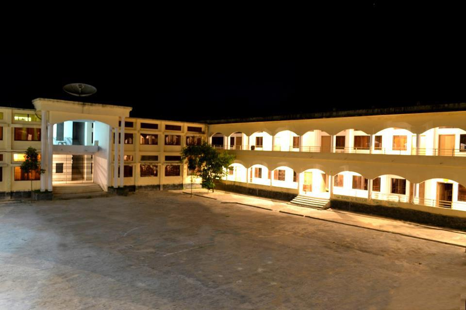

RUET Classroom Management

Computer science is the study of the theory, experimentation, and engineering that form the basis for the design and use of computers. It is the scientific and practical approach to computation and its applications and the systematic study of the feasibility, structure, expression, and mechanization of the methodical procedures (or algorithms) that underlie the acquisition, representation, processing, storage, communication of, and access to information. An alternate, more succinct definition of computer science is the study of automating algorithmic processes that scale. A computer scientist specializes in the theory of computation and the design of computational systems.[1] Its fields can be divided into a variety of theoretical and practical disciplines. Some fields, such as computational complexity theory (which explores the fundamental properties of computational and intractable problems), are highly abstract, while fields such as computer graphics emphasize real-world visual applications. Other fields still focus on challenges in implementing computation. For example, programming language theory considers various approaches to the description of computation, while the study of computer programming itself investigates various aspects of the use of programming language and complex systems. Human–computer interaction considers the challenges in making computers and computations useful, usable, and universally accessible to humans.
0Before the independence of Bangladesh, the then Government of Pakistan, to meet the increasing demand of professional engineers for the national development, established Rajshahi Engineering College in 1964 as a faculty of engineering under the University of Rajshahi. It was the second engineering college established in the then East Pakistan (The first one was Ahsanullah Engineering College: now BUET).[4] Rajshahi Engineering College ( was commonly known as REC) started its journey with only three departments: Mechanical Engineering, Electrical & Electronic Engineering and Civil Engineering, offering bachelor's degree programs only. It accepted its first class of 120 students in the academic session of 1964/65 and the second class of like number in the academic session of 1965/66. The teaching faculty consisted of 19 faculty members at that time.[5] After the independence of Bangladesh (1971), the administration of the college was controlled by the Ministry of Education of Bangladesh and academic curriculum was controlled by University of Rajshahi. However, the infrastructural development and maintenance was taken care of by the Public Works Department of Government of Bangladesh. To remove these kinds of aforesaid problems several committees and commissions were formed since 1973. On the recommendation of these committees and commissions, in 1986, Rajshahi Engineering College was converted to an institute and was named Bangladesh Institute of Technology (BIT), Rajshahi to enhance the technical education.[6] In September, 2003, the institute was upgraded to a university and was named as Rajshahi University of Engineering & Technology (RUET) to enhance the technical education and research.[7] From that time, the university is financed by the Government through the University Grants Commission (UGC) of Bangladesh. The university is an autonomous statutory organization of the Government of Bangladesh functioning within the "Rajshahi University of Engineering & Technology: Act 2003".